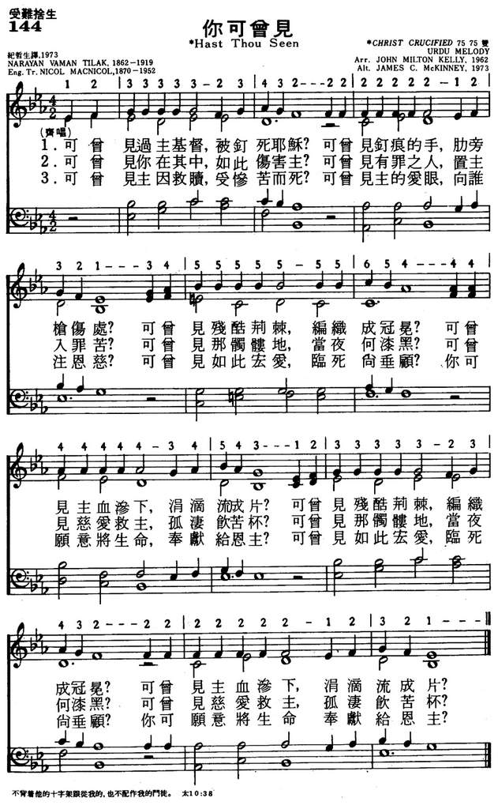

LX1804 Hast thou ever
seen the Lord
144你可看见
[亞印]
|
|
颂主新歌
144你可看见
|
|
Hast thou heard Him, seen Him, known Him?
Is not thine a captured heart?
Chief among ten thousand own Him;
Joyful choose the better part.
Captivated by His beauty,
Worthy tribute haste to bring;
Let His peerless worth constrain thee,
Crown Him now unrivaled King.
Idols once they won thee, charmed thee,
Lovely things of time and sense;
Gilded thus does sin disarm thee,
Honeyed lest thou turn thee thence.
What has stripped the seeming beauty
From the idols of the earth?
Not a sense of right or duty,
But the sight of peerless worth.
Not the crushing of those idols,
With its bitter void and smart;
But the beaming of His beauty,
The unveiling of His heart.
Who extinguishes their taper
Till they hail the rising sun?
Who discards the garb of winter
Till the summer has begun?
'Tis that look that melted Peter,
'Tis that face that Stephen saw,
'Tis that heart that wept with Mary,
Can alone from idols draw:
Draw and win and fill completely,
Till the cup o'erflow the brim;
What have we to do with idols
Who have companied with Him?
https://www.youtube.com/watch?v=fpV_9jcQQJ8 |
144你可看见
1.可曾见过主基督，被钉死耶稣？
可曾见钉痕的手，肋旁枪伤处？
可曾见残酷荆棘，编织成冠冕？
可曾见主血渗下，涓滴流成片？
可曾见残酷荆棘，编织成冠冕？
可曾见主血渗下，涓滴流成片？
2.可曾见你在其中，如此伤害主？
可曾见有罪之人，置主入罪苦？
可曾见那骷髅地，当夜何漆黑？
可曾见慈爱救主，孤凄饮苦杯？
可曾见那骷髅地，当夜何漆黑？
可曾见慈爱救主，孤凄饮苦杯？
3.可曾见主因救赎，受惨苦而死？
可曾见主的爱眼，向谁注恩慈？
可曾见如此宏爱，临死尚垂顾？
你可愿意将生命，奉献给恩主？
可曾见如此宏爱，临死尚垂顾？
你可愿意将生命，奉献给恩主？
|
|
https://www.mred365.cn/szxg/7147.html

|
|
|
|
Hast Thou Seen?
(可會見主)
144 TILAK, NARAYAN 1919177AS
調名:
CHRIST CRUCIFIED
NARAYAN VAMAN TILAK
|
Short Name: |
Narayan Vaman Tilak |
|
Full Name: |
Tilak, Narayan Vaman, 1862?-1919 |
|
Birth Year
(est.): |
1862 |
|
Death Year: |
1919 |
Marathi poet from
Maharashtra, India
|
Short
Name: |
N. Macnicol |
|
Full Name: |
Macnicol, Nicol,
1870-1952 |
|
Birth
Year: |
1870 |
|
Death
Year: |
1952 |
After a distinguished
career in the University of Glasgow and the (then) Free Church of
Scotland Theological College, Macnicol was appointed to the Western
India mission of the Free Church of Scotland (later United Free) and for
five years worked in Bombay, being in charge of the Wilson High School
(where he lived in the boys’ hostel) and also doing general evangelistc
work. In 1900 he was transferred to Poona, where he entered into a
heritage of goodwill among both Christian and non-Christians...
As an evangelistic missionary in Poona, a city famous not only for its
orthodox Hinduism but also for producing leaders in so many spheres of
religious and social reform, Macnicol was in close touch with the
thought and life of Hindu India.
Excerpt from International
Review of Mission, Volume 41, Issue 3, pages 353–356, July 1952
======================
Nicol Macnicol is the
author of Hindu Scriptures and Psalms
of Maratha Saints: One Hundred and Eight Hymns Translated From the
Marathi [1920]
[Hast
thou ever seen the Lord]
https://margnetwork.org/narayan-vaman-tilak/
When Ramabai published
the first collection of Christian bhajans she
included a few of her own publications but relied mainly on the work of Narayan
Vaman Tilak. Tilak grew up under the influence of the Marathi bhakti saints,
known to the world through a series of translations by missionaries called The
Poet-Saints of Maharashtra.1
Tilak turned to Christ in 1895 after a period of disillusionment with Hinduism
during which he contemplated beginning a new religion. He met a missionary on a
train journey who first spoke at length with him about Sanskrit poetry and later
urged him to read the New Testament. The reaction to Tilak’s baptism was
electric, and he was separated from his wife for over four years before she
rejoined him and also later came to Christ.
Like many Hindus who turn to Christ, Tilak assumed that Christ and Western
Christianity are part of one package, and he became a good Christian. But a
major transition began in his life one day when he heard the pilgrims of the
Marathi poet-saints singing their songs and decided to write bhajans to
Christ. As his pilgrimage progressed Tilak became a remarkable pioneer in what
we now call contextualization, developing patterns of evangelism and
discipleship that fit local contexts.
Tilak and his wife had visited Ramabai at Mukti in 1905, just a few months
before the revival broke out there. But there were too many differences between
them for close cooperation to develop. In fact, it was at Mukti that Tilak’s
wife Lakshmibai, by then following Christ for five years, was convinced by
Ramabai to cease wearing the bindi (red
dot on the forehead). Lakshmibai reflected on this in a presentation given in
1933:
After becoming a Christian, for many years I would apply kunku.
No missionary objected to this. Once, however, a learned Indian Christian lady
connected kunku with
the Shakta cult, misled me, and took a promise from me that I would never again
apply kunku. Afterwards
Tilak explained to me the meaning of kunku.
But since I had given a promise I did not apply it again and Tilak never
insisted that I do so.1
But Tilak went far beyond some outward accommodation to Hindu forms. The themes
of his writing also resonated with bhakti,
while being faithful to biblical revelation. In 1917 his life took another turn,
this time through meeting a Hindu during a train journey. This Hindu man
referred to the dynamism of Tilak as a young leader, and asked what had happened
to him.
Tilak realized he had drifted too far from his own people, and was now isolated
in communalized Christianity. After months of struggle and hesitation he
resolved to begin a new movement which he called devachadarbar,
God’s royal court. This was to be a brotherhood of the baptized (Christian) and
unbaptized (Hindu) disciples of Jesus; what today we might call a true church
that transcended the sociological boundaries of religious affiliation.
Tilak’s new work did not proceed far, as he died within two years of its start.
But he left a legacy and a dream that remains to be realized by new generations
of Hindus who follow Jesus.
Endnotes
1. 12 volumes published between 1926 and 1941, many available in reprint still
today.
2. The Marathi original of this is in Tilak, Lakshmibai, Sampurna
Smrutichitre, ed. Ashok Devdatt Tilak, Mumbai: Popular Prakashan, 1989, pg.
704. For the English translation see Richard, H. L., Following
Jesus in the Hindu Context: The Intriguing Implications of N. V. Tilak’ Life and
Thought, Pasadena: William Carey Library, 1998, pg. 118.
https://margnetwork.org/narayan-vaman-tilak/
Narayan Vaman Tilak [1862
– 1919]
Tilak was one of the five eminent poets known as the Panch Kavi in Maharashtra.
He was a Marathi poet who was born into a high-caste Brahmin family in Ratnagiri
District.
Growing up Tilak was deeply influenced by his grandfather and mother and had a
great desire to learn Sanskrit. From a young age he was known for his elocution
and oratory skills. Tilak also had a desire to learn English and he started
byhearting words from an English Dictionary. Once when his headmaster asked him
if he knew English, he replied that he had learnt it up to the letter ‘M’.
Inspired by this he was admitted to school free of charge.
Tilak grew to be a renowned poet & speaker at a very young age. He was only 18 &
his wife was only 11 when they got married. Leaving his wife with her parents,
he constantly wandered in search for truth and he frequently changed occupations
for a decade. Once Dhamak, a holy man he was discipled by ordered him to go back
to his wife.
“Tilak felt that the twin bounds of idolatry
and caste should be broken to restore India to her glory.” When
he was 20 he met a sadhu from Bengal who shared the same vision. An outcome of
the friendship was the yearning that India needed a spiritual awakening.
Influenced by a missionary named E.F. Ward who did relief work during a famine,
In his early thirties Tilak began to read the Bible in search of God, and
eventually, was baptized on February 1895.
“Tilak wrote constantly, chiefly poems
and hymns. In the 1950s the Marathi hymnal contained 254 of his hymns, out
of a total of almost 700.”
In his forties Tilak recommitted his heart to Christ and gave up all his
material possessions. He loved being with children and teaching them, especially
English. Wherever he moved he started a school, and children would flock to him.
What’s on Your Mind?
Experience God’s peace, empowered prayer, and spiritual growth as you reflect on
His goodness from the pages of the Bible. In this booklet, you’ll learn how
reading, studying, and meditating on God’s Word will transform your life.
https://ourdailybread.org/narayan-vaman-tilak/
https://en.wikipedia.org/wiki/Narayan_Waman_Tilak